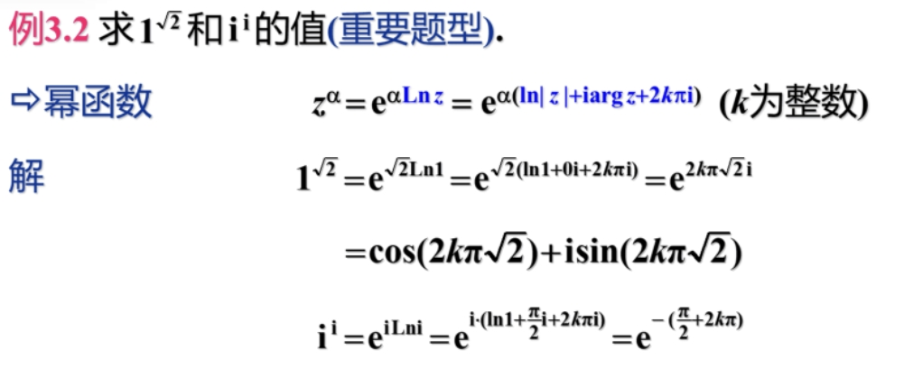
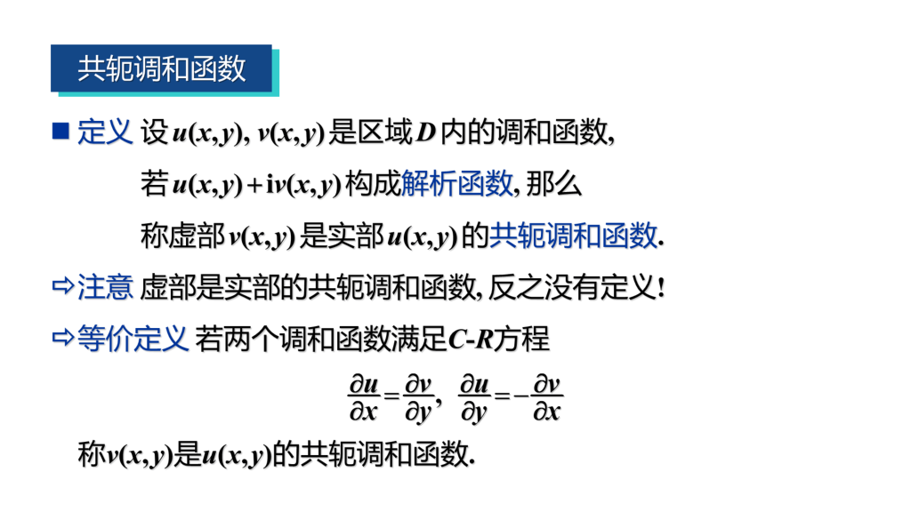
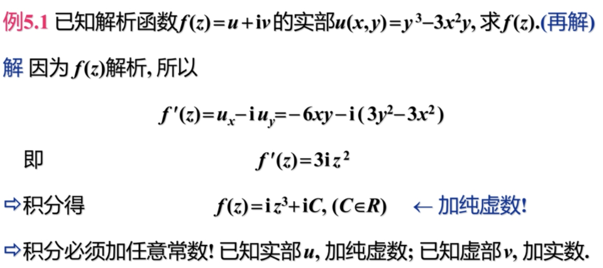
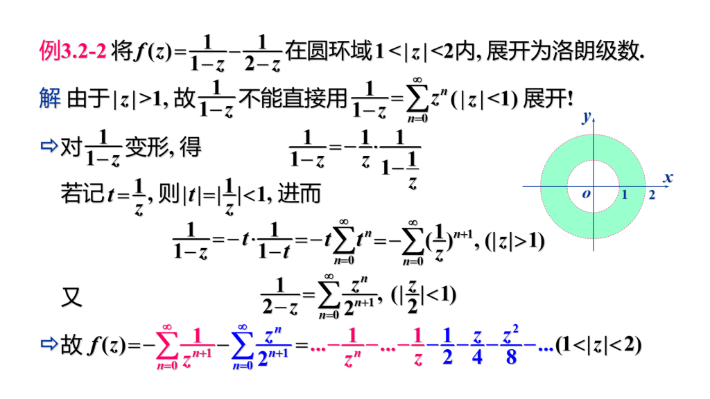
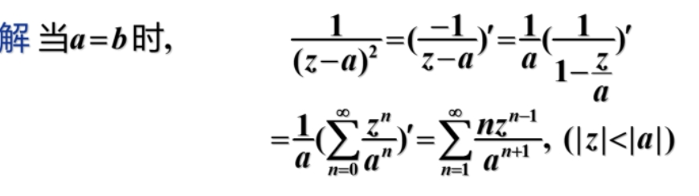
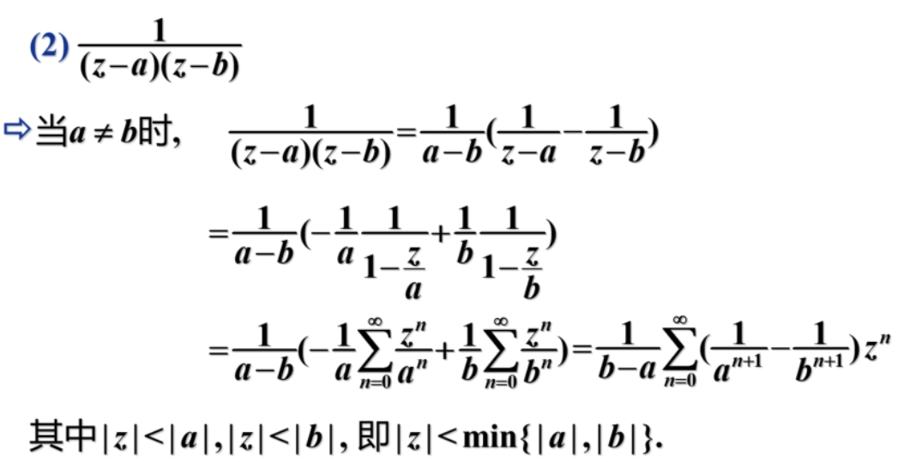
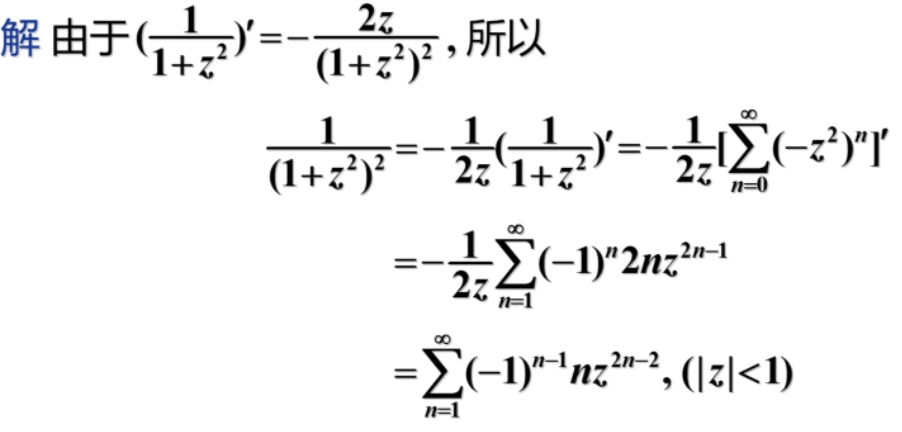
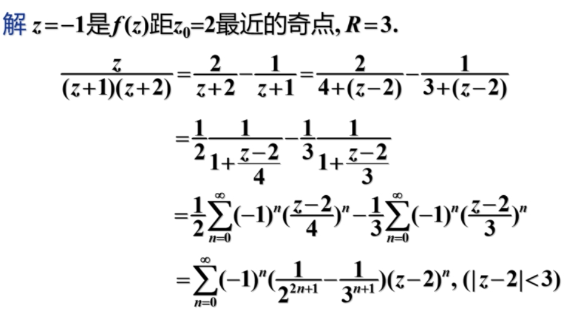

大学笔记 | 复变函数与积分变换
隐身术第二课堂。
第二章 解析函数¶
第二章总结¶
- 求导
形如 \(w = f(z)\) 的导数，与一元函数求导方法一样。
形如 \(f(z) = u(x, y) + iv(x, y)\) 的导数，求导公式为 \(f'(z) = \dfrac{\part u}{\part x} + i\dfrac{\part v}{\part x} = \dfrac{\part v}{\part y} - i\dfrac{\part u}{\part y}\)。
- 相关概念
在某点解析：指的是在该点及邻域可导。
奇点：函数不解析的点。
解析函数：函数在某区域内处处可导。
函数可导与解析的判定：先求出 \(f(z) = u(x, y) + iv(x, y)\) 的偏导数，然后判定偏导数是否满足 \(C-R\) 方程：\(u_x = v_y, u_y = -v_x\)。
如果在某点出成立，则函数在该点可导。如果某区域内成立，则在该区域内解析。
- 初等函数
指数函数
\(w = e^z = e^x(\cos y + i\sin y)\)
基本上和实数情况一样，只是多了周期性。
对数函数
\(Ln z = \ln |z| + i\arg z + 2k \pi i\)
对数函数是多值函数，其主值是 \(\ln z = \ln|z| + 2i\arg z\)。
对数函数在除去原点与负实轴的复平面上连续且解析。
对数函数的积商公式依然成立，但是对数函数的 \(n\) 次方公式以及对数函数的开 \(n\) 方根公式就不成立了（因为后面加上的 $2\pi i $ 的系数不同）。
幂函数
\(w = z^{\alpha} = e^{\alpha Ln z} = e^{\alpha(\ln |z| + i\arg z + 2k\pi i)}\)
当 \(\alpha\) 是整数时，幂函数是单值函数。而当不是整数时，函数是多值函数。
当 \(\alpha\) 不是整数时，幂函数在除去原点与负实轴的复平面上连续且解析。
三角函数 $$ \sin z = \dfrac{e^{iz} - e^{-iz}}{2i}, \ \cos z = \dfrac{e^{iz} + e^{-iz}}{2} $$ 值得注意的是，复数域上三角函数是无界的！
不过除了无界外，其他是一样的。
\(\S 2.1\) 解析函数的概念¶
-
可导必连续，连续未必可导（同二元函数）
-
复变函数求导与一元实变函数相同
-
若 \(w = f(z)\) 在 \(z_0\) 及 \(z_0\) 的领域内处处可导，则称 \(f(z)\) 在 \(z_0\) 解析，\(z_0\) 称为解析点。
若 \(f(z)\) 在区域 \(D\) 内每一点都解析，则 \(f(z)\) 是 \(D\) 内的解析函数。
若 \(f(z)\) 在 \(z_0\)不解析，称 \(z_0\) 为 \(f(z)\) 的奇点。
注意以下解析和求导的区别，可导要求某个点，解析要求的是某点及邻域。
在某点处，解析必可导，可导未必解析。
在某区域内，解析与可导等价。
在某区域内，判断解析性往往要靠求导去判断（若是看作一元函数，直接求导解决，若是看作二元函数，在证明不可解析时可以化作二元函数极限不存在来求）。

\(\S 2.2\) 函数解析的重要条件¶
-
函数 \(f(z) = u(x, y) + iv(x, y)\) 在点 \(z = x + iy\) 处可导的充要条件是：
- \(u(x, y)\) 和 \(v(x, y)\) 在 \((x, y)\) 可微
- 在点 \((x, y)\) 满足柯西-黎曼方程：\(\dfrac{\partial u}{\partial x} = \dfrac{\partial v}{\partial y},\dfrac{\partial u}{\partial y} = -\dfrac{\partial v}{\partial x}\)
关于可导和可微：在一元函数中，它们互为充要条件，在多元中可微是可导的必要条件，可导不一定可微。
-
由于在某一区域内，函数解析与可导等价，函数 \(f(z) = u(x, y) + iv(x, y)\) 在区域 \(D\) 内解析的充要条件是：
- \(u(x, y)\) 和 \(v(x, y)\) 在 \(D\) 内可微
- 满足柯西-黎曼方程：\(\dfrac{\partial u}{\partial x} = \dfrac{\partial v}{\partial y},\dfrac{\partial u}{\partial y} = -\dfrac{\partial v}{\partial x}\)
值得一提的是，当满足该条件时，\(f'(z) = \dfrac{\partial u}{\partial x} + i\dfrac{\partial v}{\partial x} = \dfrac{1}{i}\dfrac{\partial u}{\partial y} + \dfrac{\partial v}{\partial y}\)
-
讨论函数解析性，需证明函数可微，主要有以下两种方法：
- 用可微的定义：\(\Delta u = A_1\Delta x + B_1\Delta y + o(\rho)\)（较难，不推荐）。
- 用可微的充分条件，判断 \(u(x, y)\)，\(v(x, y)\) 的偏导数连续来证明可微。


\(\S 2.3\) 初等函数¶
复变量的初等函数和实变量的基本相同，但个别区别较大。
-
指数函数
\(w = e^z = e^{x + iy} = e^x(\cos y + i\sin y)\)，且满足原有的求导公式。
注意区别的是 \(w = e^z\) 是以 \(2k\pi i\) 为周期的函数。
指数函数在复平面内处处解析。
-
对数函数（区别较大）
指数函数 \(e^w = z\) 的反函数 \(w = f(z)\) 称为对数函数，记作 \(w = Ln z\)。
由 \(e^{u + iv} = e^ue^{iv} = e^u(\cos v + i\sin v)\)，我们有 \(u = \ln|z|,v = \theta + 2k\pi = Arg z\)。故 \(Lnz = \ln|z| + iArgz = \ln|z| + i\arg z + 2k\pi i\)。
记 \(\ln z = \ln|z| + i\arg z\) 为 \(Lnz\) 的主值。对于给定不同的 \(k\) 所形成的不同 \(Lnz\) 称为其中一个分支。\(\ln z\) 满足原有的求导公式。
注意复数 \(z\) 的模长只和实部 \(u\) 有关。
此时对数函数的积商公式仍然成立 \(Lnz_1z_2 = Lnz_1 + Lnz_2,Ln\dfrac{z_1}{z_2} = Lnz_1 - Lnz_2\)。
但是 \(n\) 次幂和 \(n\) 次方根的对数公式不再成立。
由于 \(Lnz^n = n\ln|z| + in\arg z + 2k_1\pi i\) 而 \(nLnz = n\ln|z| + in\arg z + n2k_2\pi i\) 后面的 \(2\pi i\) 的系数不同，故不相等。
由于 \(\ln|z|\) 除了原点外处处解析，而 \(\arg z\) 在原点和负实轴上不连续，故对数函数的主值 \(\ln z\) 在除去原点和负实轴的平面上连续，同理 \(Ln z\) 的各个分支在除原点和负实轴的复平面上解析。
-
幂函数
\(w = z^n\) 是复平面内的单值解析函数，\(w = z^{-n}\) 除原点外是单值解析函数（\(n \in \N\)）。
\(w = z^\alpha = e^{\alpha Lnz} = e^{\alpha(ln|z| + iargz)}e^{2k\alpha \pi i}\)，不难发现如果 \(\alpha\) 是整数，则 \(w\) 必是单值函数，但 \(\alpha\) 取小数时，\(w\) 可能是多值函数。
由于 \(Lnz\) 的各分支在除去原点和负实轴的平面上是解析的，所以 \(w = z^{\alpha}\) 的各分支在除去原点和负实轴的平面上是解析的（注意多值函数是不可解析的）。
幂函数的导数和之前相同。

-
三角函数
由欧拉公式，易得 \(\sin z = \dfrac{e^{iz} - e^{-iz}}{2i}\)，\(\cos z = \dfrac{e^{iz} + e^{-iz}}{2}\)。
以前学过的三角函数公式全都适用。
三角函数在复数域是无界函数。
\(\sin z\) 是奇函数，\(\cos z\) 是偶函数，且它们依然是以 \(2\pi\) 为周期的。
求导和之前相同，且在整个复平面上解析。
习题课¶
第三章 复变函数的积分¶
第三章总结¶
- 若 \(f(z)\) 不解析，\(\int f(z)\) 按路径来设变量，分别积分再加起来。
此时不能直接积分！一定要按路径来！
只有解析函数积分与路径无关，可以直接求解。
-
积分与路径无关的条件是 \(f(z)\) 在单连通域内解析。
-
柯西积分定理 \(f(z)\) 在 \(C\) 内处处连续，处处解析，那么 \(\oint_C f(z)dz = 0\)。
-
复合闭路定理 外面大圈积分等于里面小圈积分和 \(\int_C f(z)dz = \sum_{k = 1}^n \oint_{C_k}f(z)dz\)。
-
柯西积分公式 \(\oint_C \dfrac{f(z)}{z - z_0}dz = 2 \pi i f(z_0)\)，\(z_0\) 为任一点，要保证闭曲线内只有一个奇点。
-
高阶导数公式 \(f^{(n)}(z_0) = \dfrac{n!}{2\pi i}\oint_C \dfrac{f(z)}{(z - z_0)^{n + 1}}dz\)，\(z_0\) 为任一点，要保证闭曲线内只有一个奇点。也即 \(\oint_C \dfrac{f(z)}{(z - z_0)^{n + 1}} = \dfrac{2\pi i}{n!} f^{(n)}(z_0)\)。
-
对于多个奇点，以这些奇点为圆心做圆周，然后由复合闭路定理：\(\int_C f(z)dz = \sum_{k = 1}^n \oint_{C_k}f(z)dz\)，就可以化为 \(n\) 个单奇点的积分。注意若没有奇点，说明单连通域内处处可解析，此时用柯西 - 古萨特定理直接得出积分为 \(0\)。
-
调和函数：满足二阶偏导数连续且满足拉普拉斯方程。
-
共轭调和函数：指一对调和函数 \(u(x, y),v(x, y)\) 满足 \(f(z) = u(x, y) + iv(x, y)\) 是解析函数。 这样的 \(u(x, y),v(x, y)\) 是一对共轭调和函数。
-
求解析函数（已知实部或虚部）：全微分法，偏微分法，原函数法（首选）。
\(\S 3.1\) 复变函数积分的概念¶
复变函数积分可分解为两个实变函数第二型曲线积分
- 若 \(f(z) = u(x, y) + iv(x, y)\) 沿 \(C\) 可积，则 \(\int_C f(z)dz = \int_C u(x, y)dx - v(x, y)dy + i\int_C v(x, y)dx + u(x, y)dy\)
若函数不解析，往往根据不同的路径选取积分变换。此时不能直接积分！一定要按路径来！
- 且基本上第二型曲线积分中的技巧均可以运用在复变函数积分中。
\(\S 3.2\) 柯西积分定理¶
- 柯西积分定理（柯西 - 古萨特基本定理）
若 \(f(z)\) 在单连通域 \(D\) 内解析，则对任意一条简单闭曲线 \(C\)，有 \(\oint_C f(z)dz = 0\)。
函数在某一处解析的定义：函数在该点及该点的邻域内处处可导。
- 积分与路径无关条件
若 \(f(z)\) 在单连通域 \(D\) 内解析，则积分与路径无关。
- 我们将单连通上的柯西定理，同样可以引入到多连通域上。我们定义复合闭路：

复合闭路是长这样的

- 闭路变形原理：

这个定理告诉我们，对于解析函数 \(f(z)\) 沿闭曲线 \(C\) 的积分，当闭曲线 \(C\) 在函数 \(f(z)\) 的解析区域内连续变形时，积分值不变。
- 与单连通域上 积分与路径无关 的情况类似，我们在多连通域上有复合闭路定理、

- 原函数
对于解析函数 \(f(z)\) 在单连通域内，沿简单曲线的积分与路径无关，只与起点终点有关。当我们把起点固定，终点变动时，我们可以定义一个以 \(z\) 为变量的单值函数：\(F(z) = \int_{z_0}^{z}f(t)dt\)。
若 \(f(z)\) 在单连通域内解析，那么 \(F(z)\) 也在单连通域内解析，且 \(F'(z) = f(z)\)。
其实和积分上的原函数定义是一样的，原函数的形式是 \(F(z) = \int_{z_0}^z f(t)dt + C\)。
\(\S 3.3\) 柯西积分公式¶
- 柯西积分公式

\(\S 3.4\) 解析函数的高阶导数¶
- 解析函数的高阶导数
解析函数的导数，还是解析函数，并且 \(f^{(n)}(z_0) = \dfrac{n!}{2\pi i}\oint_C \dfrac{f(z)}{(z - z_0)^{n + 1}}dz\)
和上一节同理，\(z_0\) 一定要是奇点且高阶导数公式只适用于 \(C\) 内只有一个奇点的积分。所以解决含多个奇点的情况要以多个奇点为圆心分别进行高阶导数公式。
- 例题
求 \(\oint_C \dfrac{e^z}{(z^2 + 1)^2}dz\)

\(\S 3.5\) 调和函数¶

- 解析函数与调和函数的关系
若 \(f(z) = u(x, y) + iv(x, y)\) 在 \(D\) 内解析，则 \(u(x, y)\) 和 \((v, y)\) 都是 \(D\) 内的调和函数。
解析的条件比调和更加严格，它需要 \(u(x, y)\) 和 \(v(x, y)\) 分别调和的情况下，二中之间也满足 \(C-R\) 方程。
-

-
由于解析函数实部 \(u(x, y)\) 和虚部 \(v(x, y)\) 满足 \(C-R\) 方程（$\dfrac{\partial u}{\partial x} = \dfrac{\partial v}{\partial y},\dfrac{\partial u}{\partial y} = -\dfrac{\partial v}{\partial x} $），所以我们知道实部或虚部中一个就能求出另外一个。
具体可用全微分法或偏微分法（先对 \(x\) 积分，再对 \(y\) 积分）。也可以用原函数法（如下）。

公式 \(f'(z) = u_x - iu_y = v_y + iv_x\) 由第二章中推出。
- 例题

原函数法的应用。
习题课¶


有前面的高阶导数公式可知，这里的 \(r\) 取任一个小于 \(1\) 的值都可以。

第四章 级数¶
第四章总结¶
-
复数列收敛要求实部极限和虚部极限均收敛。
-
复数列收敛半径 \(R = \dfrac{1}{\lambda}\)（其中 \(\lambda\) 可以用比值法或根值法算），复数列的收敛域构成一个收敛圆。
-
复数列可以泰勒展开，收敛域是一个收敛圆，收敛半径是到最近奇点的距离。
常用幂级数展开 $$ \begin{gather} \frac{1}{1-x} = \sum_{n = 0}{\infty}x, \frac{1}{1+x} = \sum_{n = 0}{\infty}(-1)nx^{n} (-1 < x < 1) \newline e^x = \sum_{n = 0}{\infty}\frac{xn}{n!} (-\infty < x < \infty) \newline \sin x = \sum_{n = 0}{\infty}(-1)n\frac{x^{2n+1}}{(2n+1)!} (-\infty < x < \infty) \newline \cos x = \sum_{n = 0}{\infty}(-1)n\frac{x^{2n}}{(2n)!} (-\infty < x < \infty) \newline \ln(1 + x) = \sum_{n = 0}^{\infty} (-1)n\frac{x}{n + 1} (-1 < x \le 1) \newline \arctan x = \sum_{n = 0}^{\infty} (-1)n\frac{x}{2n + 1} (-1 \le x \le 1) \end{gather} $$
-
复数列可以洛朗展开，其收敛域是收敛圆环，\(\sum_{n = 0}^{\infty}c_n(z - z_0)^n = \sum_{n = 1}^{\infty}c_{-n}(z - z_0)^{-n} + \sum_{n = 0}^{\infty}c_n(z - z_0)^n\)。且系数 \(c_n\) 满足公式 \(c_n = \dfrac{1}{2\pi i} \oint\dfrac{f(\xi)}{(\xi - z_0)^{n + 1}}d\xi\)。
-
利用系数 \(c_n\) 公式可以推导出 \(\oint_C f(z)dz = 2\pi ic_{-1}\)。（这里收敛圆环要满足所有奇点都在小圆内）
\(\S 4.1\) 复级数¶
- 复数列
\(\{z_n\} = \{x_n + iy_n\}\) 是复数列，其极限判断以及四则运算与实数列相同。
- 复数项级数
复数列所有项的和称为复数项级数，\(\sum_{n = 1}^{\infty}z_n = z_1 + z_2 + \dots\)
级数收敛与发散的定义与实数级数相同。
复数项级数收敛的充要条件是实部和虚部都收敛。
复数项级数收敛的必要条件是 \(\lim_{n \to \infty} z_n = 0\)。
- 绝对收敛与条件收敛
若 \(\sum_{n = 1}^{\infty} |z_n|\) 收敛，则该复数列绝对收敛。
不绝对收敛的收敛级数称为条件收敛。
- 判断复数项级数敛散性的方法
实部虚部分开讨论或在一起直接判定。
一些基本技巧可以用正项级数的判定技巧。
- 复变函数项级数
设 \(\{f_n(z)\}\) 是区域 \(D\) 内的函数列，称 \(\sum_{n = 1}^{\infty} f_n(z)\) 为复变函数项级数。
若 \(D\) 内有一点 \(z_0\)，满足 \(\lim_{n \to \infty} S_n(z_0) = S(z_0)\)，称 \(z_0\) 是级数的收敛点。即 \(S(z_0) = \sum_{n = 1}^{\infty}f_n(z_0)\)。
若级数在 \(D\) 内处处收敛，则称 \(S(z) = \sum_{n = 1}^{\infty}f_n(z)\) 为级数的和函数。
- 幂级数
形如 \(\sum_{n = 0}^{\infty}c_n(z - z_0)^n\) 的级数。
由 \(Abel\) 定理可知，必存在一个圆域，使得幂级数在圆域内绝对收敛，在圆域外发散。但对于圆周上的幂级数的敛散性要单独讨论。
故我们可以定义圆周 \(|z| = R\) 称为幂级数 \(\sum_{n = 0}^{\infty}c_nz^n\) 的收敛圆，\(R\) 称为收敛半径。
- 求幂级数收敛半径
若 \(\lim_{n \to \infty}|\dfrac{c_{n + 1}}{c_n}| = \lambda\) 或 \(\lim_{n \to \infty} \sqrt[n]{|c_n|} = \lambda\)，则可以得出 \(R = \dfrac{1}{\lambda}\)。
注意这里 \(c_n\) 是 \(z^n\) 前面的系数。
- 例题

\(\S 4.2\) 泰勒级数¶
- 泰勒展开定理

有关泰勒展开的一些性质
若 \(f(z)\) 有奇点，则最近的奇点一定在 \(f(z)\) 的收敛圆周上，即收敛半径就是到最近奇点的距离。
函数在 \(z_0\) 解析的充要条件是函数在 \(z_0\) 点的领域内可展开成幂级数（解析函数的本质特征）。
解析函数的幂级数展开式是唯一的，就是泰勒级数。
- 例题（有技巧地泰勒展开）


\(\S 4.3\) 洛朗级数¶
- 洛朗级数
形如 \(\sum_{n = 0}^{\infty}c_n(z - z_0)^n = \sum_{n = 1}^{\infty}c_{-n}(z - z_0)^{-n} + \sum_{n = 0}^{\infty}c_n(z - z_0)^n\) 的级数称为洛朗级数。
当 \(c_{-n} = 0(n = 1, 2, \dots)\) 时，洛朗级数就是幂级数。
- 洛朗级数的收敛圆环
洛朗级数分为正幂项和负幂项，正幂项称为洛朗级数的解析部分，负幂项称为洛朗级数的主要部分。
若两部分在 \(z_0\) 处都收敛，则称洛朗级数在 \(z_0\) 处收敛。


- 洛朗定理

同一解析圆环内，\(f(z)\) 的洛朗展开式是唯一的（即 \(c_n\) 相同）。
将函数展开为洛朗级数一般有直接法和间接法。
直接法可以直接用洛朗定理（套公式），然后用高阶函数求导公式来求。
间接法，利用一些技巧间接转化。比如 \(f(z) = (z - z_0)^kg(z)\)，可以先将 \(g(z)\) 洛朗展开，然后在乘起来，得出 \(f(z)\) 的洛朗级数。还有 \(\dfrac{1}{1 - z} = \sum_{n = 0}^{\infty}z^n(|z| < 1)\) 也是一个常用转化公式。
- 例题

注意学习这里的技巧，如果 \(\dfrac{1}{1 - z}\) 里 \(z < 1\)，那么直接用公式 \(\dfrac{1}{1 - z} = \sum_{n = 0}^{\infty}z^n(|z| < 1)\)，如果 \(z > 1\)，就进行转化 \(\dfrac{1}{1 - z} = \dfrac{1}{z}\cdot\dfrac{1}{\dfrac{1}{z} - 1}\)，然后对后面套公式即可。
- 积分计算公式

习题课¶
- \(\dfrac{1}{(z - a)(z - b)}\) 展开成 \(z\) 的幂级数，并指出收敛域。


- \(\dfrac{1}{(1 + z^2)^2}\) 展开成 \(z\) 的幂级数，并指出收敛域。

- \(\sin^2z\) 展开成 \(z\) 的幂级数，并指出收敛域。

- \(\dfrac{z}{(z + 1)(z + 2)},z_0 = 2\) 求该函数在 \(z_0\) 的泰勒展开。

- \(\dfrac{1}{z^2},z_0 = -1\) 求该函数在 \(z_0\) 的泰勒展开。

- \(\dfrac{1}{4 - 3z},z_0 = 1 + i\) 求该函数在 \(z_0\) 的泰勒展开。

- \(\dfrac{1}{(z - 1)(z - 2)},0 < |z - 1| < 1;1 < |z - 2| < +\infty\) 求该函数在指定圆环内的泰勒展开。

- \(\dfrac{1}{z^2(z - i)}\)，以 \(z_0\)为中心的圆环域。 求该函数在指定圆环内的泰勒展开。


- 利用积分公式来算下题

- 根据洛朗展开倒推收敛圆环与和函数


第五章 留数¶
第五章总结¶


一级极点用法则一，多极用法则二，复杂分式（且分母好求导）考虑法则三，无穷用法则四。判断无穷的性质就是转化为判断零处的性质。
\(\S 5.1\) 孤立奇点¶
- 孤立奇点
若 \(z_0\) 为奇点，且 \(z_0\) 邻域内没有奇点，则 \(z_0\) 是孤立奇点。
若 \(z_0\) 是孤立奇点，则必存在去心邻域 \(0 < |z - z_0| < \delta\)，\(\delta\) 取决于 \(z_0\) 到其他奇点的最小距离。
- 孤立奇点的分类
在孤立奇点的解析邻域内，\(f(z)\) 可以进行洛朗展开。根据洛朗展开式中负幂项的多少，把孤立奇点分为三类。
- 可去奇点：展开式中不含负幂项。
- 极点：展开式中有有限个负幂项。
-
本性奇点：展开式中有无限个负幂项。
-
可去奇点的判定
若 \(f(z)\) 在 \(z_0\) 的去心邻域内解析，则 \(z_0\) 是 \(f(z)\) 可去奇点的充要条件是 \(\lim_{z \to z_0} f(z) = c_0\)。
- 极点
若 \(f(z)\) 在 \(z_0\) 的去心邻域内，洛朗展开式中幂次最小的是 \(-m\) 次幂，则称 \(z_0\) 为 \(f(z)\) 的 \(m\) 级极点。


- 例题

- 孤立奇点类型的判断方法

- 函数的零点与极点的关系
若不恒等于 \(0\) 的解析函数 \(f(z)\) 在 \(z_0\) 的邻域内可表示为 \(f(z) = (z - z_0)^mg(z)\)，其中 \(g(z)\) 在 \(z_0\) 解析且 \(g(z_0) \ne 0\)，则称 \(z_0\) 为 \(f(z)\) 的 \(m\) 级零点。
零点级数的判定：若 \(f(z)\) 在 \(z_0\) 解析，则 \(z_0\) 为 \(f(z)\) 的 \(m\) 级零点的充要条件是 \(f^{(k)}(z_0) = 0(k = 0, 1, \dots, m - 1)\) 且 \(f^{(m)}(z_0) \ne 0\)。
零点与极点的关系：若 \(z_0\) 是 \(f(z)\) 的 \(m\) 级极点，则 \(z_0\) 是 \(\dfrac{1}{f(z)}\) 的 \(m\) 级零点。同样的，若 \(z_0\) 是 \(f(z)\) 的 \(m\) 极零点，则 \(z_0\) 是 \(\dfrac{1}{f(z)}\) 的 \(m\) 级极点。
其实就是看分母的式子在 \(z_0\) 上是几重跟就是几重零点。
- 分式的零点与极点

虽然函数的极点级数难以确定，但是零点级数好确定，尤其是分式，可以拆成分子分母来讨论。所以我们可以利用零点级数来求极点级数。
- 函数在无穷远点的性态

若判断函数在 \(\infty\) 点处的性态，可以令 \(\xi = \dfrac{1}{z}\)，故 \(f(z)\) 在 \(\infty\) 的性态则变为 \(\phi(\xi)\) 在 \(0\) 处的性态。经过一系列推到之后，得到如下定理：

- 例题

如果函数可以进行洛朗展开，则直接用洛朗展开然后判断正幂项次数。但对于无法洛朗展开的函数，可以用定义法来解决。
\(\S 5.2\) 留数¶
由前面的 \(\oint_C f(z)dz = 2\pi i c_{-1}\)，可知 \(c_{-1}\) 很重要，我们称之为留数。

- 留数定理
函数沿闭曲线的正向积分等于所有奇点的留数和乘以 \(2\pi i\)
若 \(z_0\) 是 \(f(z)\) 的可去奇点，则留数 \(c_{-1} = 0\)。
若 \(z_0\) 是 \(f(z)\) 的本性奇点，则只能用洛朗展开求 \(c_{-1}\)。
若 \(z_0\) 是 \(f(z)\) 的极点，则可以用以下四个法则来相对简便求留数。
法则一：若 \(z_0\) 是 \(f(z)\) 的一级极点，则 \(\Res[f(z), z_0] = \lim_{z \to z_0}(z - z_0)f(z)\)。
法则二：若 \(z_0\) 是 \(f(z)\) 的 \(m\) 级极点，则 \(\Res[f(z), z_0] = \dfrac{1}{(m - 1)!}\lim_{z \to z_0}\dfrac{d^{m - 1}}{dz^{m - 1}}[(z - z_0)^mf(z)]\)。
法则三：设 \(f(z) = \dfrac{P(z)}{Q(z)}\)，\(P(z)\) 和 \(Q(z)\) 在 \(z_0\) 解析，若 \(P(z_0) \ne 0,Q(z_0) = 0, Q'(z_0) \ne 0\)，则 \(z_0\) 为 \(f(z)\) 的一级极点且 \(\Res[f(z), z_0] = \dfrac{P(z_0)}{Q'(z_0)}\)。
法则四：无穷远点 \(\infty\) 的留数 \(\Res[f(z), \infty] = -c_{-1} = -\Res[f(\dfrac{1}{z})\cdot \dfrac{1}{z^2}, 0]\)。（我们利用这条法则，当内部积分不好算时，可以转化为外部的积分和来算）
注：\(\infty\) 一定是奇点，但不能判断奇点类型。
- 无穷远点的留数

注：\(\infty\) 一定是奇点，但不能判断奇点类型。
推论：若 \(f(z)\) 在\(R < |Z| < +\infty\) 内的洛朗展开为 \(f(z) = \sum_{-\infty}^{+\infty} c_nz^n\)，则 \(\Res[f(z), +\infty] = -c_{-1}\)。
定理：若 \(f(z)\) 在扩充复平面上，包括 \(\infty\) 在内只有有限个孤立奇点，则 \(f(z)\) 所有奇点的留数总和为零。
判断无穷的性质就是转化为判断零处的性质。
- 例题

注意这里解法二，\(m\) 确实取任一大于等于 \(3\) 的数即可（洛朗展开之后可以看出）。


习题课¶
- 求下列函数奇点，若是极点则确定级数


确定奇点的取值之后，若是在分母上，可以通过不断求导判断是几级零点，然后就可以判断出是几级极点。
- 利用留数计算积分


- 判断 \(\infty\) 的奇点类型并求出 \(\infty\) 的留数

- 利用外面算里面


第七章 傅里叶变换¶
第七章总结¶
\(\S 7.1\) 傅里叶级数¶
- 傅里叶级数


- 复指数形式的傅里叶级数
将欧拉公式代入到上式子，可以得到：

\(\S 7.2\) 傅里叶积分与傅里叶变换¶
- 傅里叶积分定理

- 傅里叶变换
将上式积分式子进行变换，得到如下：


- 例题


\(\S 7.3\) 单位脉冲函数¶
- 单位脉冲函数

- \(\delta\) 的性质


- \(\delta\) 函数的傅氏变换

这两个傅氏变换对很重要，很多题目重要需要靠这两个不断变换。
- 例题


\(\S 7.4\) 傅里叶变换的性质¶
-
线性性质 $$ \begin{gather} F_1(\omega) = \mathscr{F}[f_1(t)],F_2(\omega) = \mathscr{F}[f_2(t)] \ \Rightarrow \mathscr{F}[\alpha f_a(t) + \beta f_2(t)] = \alpha F_1(\omega) + \beta F_2(\omega) \end{gather} $$ 逆变换同理成立。
-
平移性质 $$ \begin{gather} F(\omega) = \mathscr{F}[f(t)] \ \Rightarrow \mathscr{F}[f(t - t_0)] = e^{-i\omega t_0}F(\omega) ,\ \mathscr{F}^{-1}[F(\omega - \omega_0)] = e^{i\omega t_0}f(t) \end{gather} $$
-
伸缩性质 $$ \begin{gather} F(\omega) = \mathscr{F}[f(t)] \ \Rightarrow \mathscr{F}[f(at)] = \dfrac{1}{|a|}F(\dfrac{\omega}{a}) \end{gather} $$
-
微分性质 $$ \begin{gather} 若 \lim_{|t| \to +\infty}f(t) = 0, 则 \mathscr{F}[f'(t)] = i\omega \mathscr{F}[f(t)] \ 若 \lim_{|t| \to +\infty}f^{(k)}(t) = 0, 则 \mathscr{F}[f^{(n)}(t)] = (i\omega)^n \mathscr{F}[f(t)] \end{gather} $$
-
积分性质 $$ \begin{gather} 若 g(t) = \int_{-\infty}^t f(\tau)d\tau,\lim_{t \to +\infty} g(t) = 0,则 \ \mathscr{F}[g(t)] = \dfrac{1}{i\omega}\mathscr{F}[f(t)] \end{gather} $$
其实就是求导倒过来的式子。
- 卷积与卷积定理
\(f_1(t)\) 与 \(f_2(t)\) 的卷积记为 \(f_1(t) \ast f_2(t) = \int_{-\infty}^{+\infty}f_1(\tau)f_2(t - \tau)d\tau\)。
且卷积满足交换律，结合律和分配律。
卷积定理 $$ \begin{gather} F_1(\omega) = \mathscr{F}[f_1(t)],F_2(\omega) = \mathscr{F}[f_2(t)] \ \Rightarrow \mathscr{F}[f_1(t) * f_2(t)] = F_1(\omega) \cdot F_2(\omega) \ 推论 \Rightarrow \mathscr{F}[f_1(t) \cdot f_2(t)] = \dfrac{1}{2\pi} F_1(\omega) * F_2(\omega) \end{gather} $$
习题课¶
第八章 拉普拉斯变换¶
\(\S 8.1\) 拉普拉斯变换的概念¶
- 拉普拉斯变换


- 拉普拉斯变换存在的条件

- 重要公式 & 例题


\(\S 8.2\) 拉普拉斯变换的性质¶
-
线性性质 $$ \begin{gather} F_1(\omega) = \mathscr{L}[f_1(t)],F_2(\omega) = \mathscr{L}[f_2(t)] \ \Rightarrow \mathscr{L}[\alpha f_a(t) + \beta f_2(t)] = \alpha F_1(\omega) + \beta F_2(\omega) \end{gather} $$ 逆变换同理
-
微分性质 $$ \begin{gather} 若 F(s) = \mathscr{L}[f(t)] \Rightarrow 则 \mathscr{L}[f'(t)] = sF(s) - f(0)\ 一般地，有 \mathscr{L}[f^{(n)}(t)] = s^nF(s) - s^{n - 1}f(0) - s^{n - 2}f'(0) - \dots - sf^{(n - 2)}(0) - f^{(n - 1)}(0) \ 若 F(s) = \mathscr{L}[f(t)] \Rightarrow 则 F'(s) = -\mathscr{L}[tf(t)] \Rightarrow 则 f(t) = \dfrac{1}{t}\mathscr{L}[-F'(s)] \ 一般地，有 F^{(n)}(s) = (-1)n\mathscr{L}[tnf(t)] \end{gather} $$
-
积分性质 $$ \begin{gather} 设 F(s) = \mathscr{L}[f(t)] \Rightarrow 则 \mathscr{L}[\int_0^t f(t)dt] = \dfrac{1}{s} F(s) \ 设 F(s) = \mathscr{L}[f(t)] \Rightarrow 则 \mathscr{L}[\dfrac{f(t)}{t}] = \int_{0}^{+\infty} \dfrac{f(t)}{t} e^{-st}dt = \int_{s}^{\infty}F(s)ds \ 或 f(t) = t\mathscr{L}{-1}[\int_sF(s)ds] \end{gather} $$
-
位移性质
$$ 设 F(s) = \mathscr{L}[f(t)]， a 为复常数，则 \mathscr{L}[e^{at}f(t)] = F(s - a) $$
- 延迟性质
$$ 若 t < 0 时 f(t) = 0，且 F(s) = \mathscr{L}[f(t)]，则对任意非负实数 \tau，有 \mathscr{L}[f(t - \tau)] = e^{-s\tau}F(s) $$ 值得注意的是，

- 计算反常积分

- 卷积及卷积定理


- 例题


\(\S 8.3\) 拉普拉斯逆变换¶
- 反演积分公式
\(f(t) = \dfrac{1}{2\pi i }\int_{\beta - i\infty}^{\beta + i\infty}F(s)e^{st}ds\) 这个公式是拉式逆变换的一般公式，称为反演积分公式。

- 利用留数计算反演公式


- 例题
求拉式逆变换既可以用留数来做，也可以拆分成熟悉的函数来做。


\(\S 8.4\) 用拉氏变换解常微分方程¶
- 微分方程的拉氏变换解法
由于直接对微分方程运算比较困难，所以我们可以先对两边进行拉普拉斯变换，求出 \(F(s)\) 的表达式，然后再可以用留数法求出逆变换。

- 例题